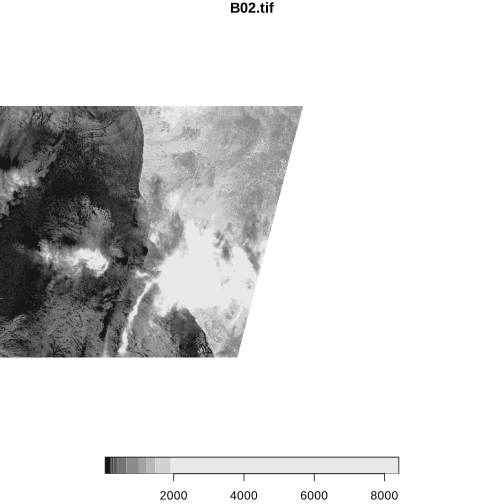

# Load required library
library(stars)
par(new=FALSE)
# Define the COG URL (public Sentinel-2 COG)
cog_url <- "/vsis3/sentinel-cogs/sentinel-s2-l2a-cogs/12/R/UU/2024/4/S2A_12RUU_20240421_0_L2A/B02.tif"
# Set environment variables
Sys.setenv(AWS_NO_SIGN_REQUEST = "YES")
Sys.setenv(GDAL_DISABLE_READDIR_ON_OPEN = "EMPTY_DIR")
# proxy=TRUE ensures only metadata is read at this point
r <- read_stars(cog_url, proxy = TRUE)
# Extract raster dimensions
dims <- st_dimensions(r)
yOffset <- dims$y$to / 2 # Start at the midpoint (bottom half)
ySize <- dims$y$to / 2 # Capture half the height
xSize <- dims$x$to # Use full width
# Define RasterIO parameters for efficient reading of only a subset of the total data
rasterio <- list(nYOff = yOffset, nXSize = xSize, nYSize = ySize, bands = c(1))
# Read the bottom half of the raster efficiently
x <- read_stars(cog_url, RasterIO = rasterio)
# Plot the extracted bottom half
plot(x)Loading required package: abind
Loading required package: sf
Linking to GEOS 3.13.0, GDAL 3.10.1, PROJ 9.5.1; sf_use_s2() is TRUE
Note: sf is linked to a GDAL version without netCDF driver, some tests or examples may fail
Warning message in CPL_read_gdal(as.character(x), as.character(options), as.character(driver), :
“GDAL Message 1: PROJ: proj_create_from_database: Open of /opt/conda/share/proj failed”
Warning message in CPL_read_gdal(as.character(x), as.character(options), as.character(driver), :
“GDAL Message 1: The definition of projected CRS EPSG:32612 got from GeoTIFF keys is not the same as the one from the EPSG registry, which may cause issues during reprojection operations. Set GTIFF_SRS_SOURCE configuration option to EPSG to use official parameters (overriding the ones from GeoTIFF keys), or to GEOKEYS to use custom values from GeoTIFF keys and drop the EPSG code.”
Warning message in CPL_read_gdal(as.character(x), as.character(options), as.character(driver), :
“GDAL Message 1: PROJ: proj_create_from_database: Open of /opt/conda/share/proj failed”
Warning message in CPL_read_gdal(as.character(x), as.character(options), as.character(driver), :
“GDAL Message 1: The definition of projected CRS EPSG:32612 got from GeoTIFF keys is not the same as the one from the EPSG registry, which may cause issues during reprojection operations. Set GTIFF_SRS_SOURCE configuration option to EPSG to use official parameters (overriding the ones from GeoTIFF keys), or to GEOKEYS to use custom values from GeoTIFF keys and drop the EPSG code.”
downsample set to 14
